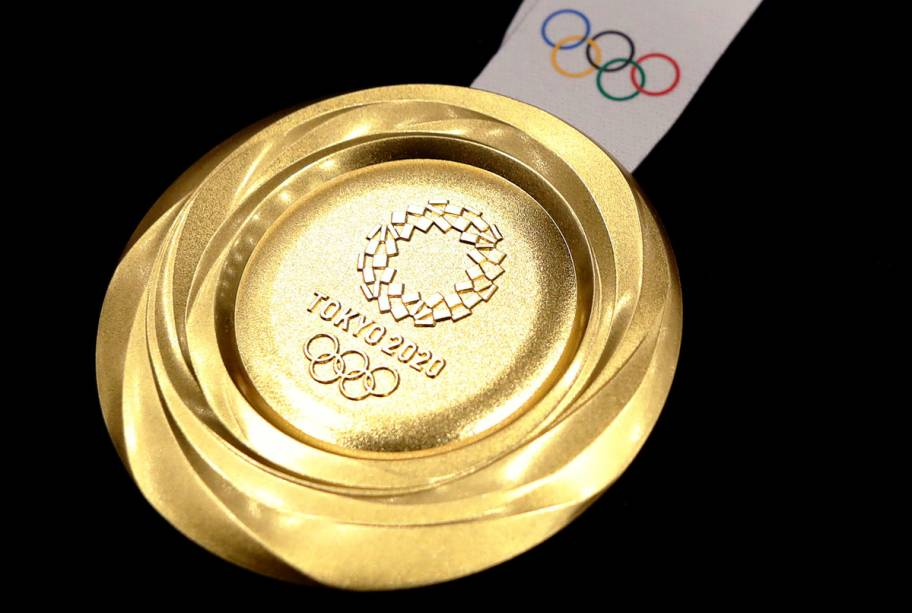

Falando Sobre as Olimpíadas
Os primeiros Jogos Olímpicos ocorreram no século VIII A.C. em Olímpia, na Grécia. Eles eram realizados a cada quatro anos e assim continuaram por 12 séculos.
Em seguida, no IV século D.C., todos os festivais pagãos foram proibidos pelo Imperador Teodósio I, e isso incluiu também os Jogos Olímpicos.
No entanto, a tradição foi ressuscitada cerca de 1500 anos depois: os primeiros Jogos Olímpicos modernos foram realizados em 1896 na Grécia.
Na Grécia antiga, os atletas não se preocupavam com patrocínio, proteção ou moda – eles competiam nus.
Naquela época, os jogos duravam de cinco a seis meses.
As mulheres só foram autorizadas a competir nos Jogos Olímpicos em 1900.